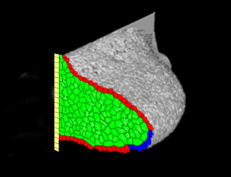
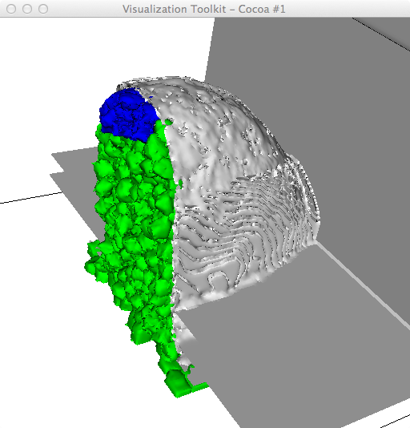
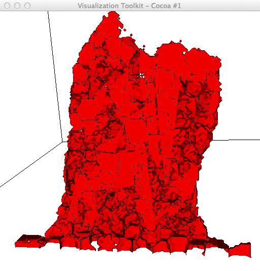

Julio asked about doing something like this:

in the context of post-processing .vtk files from cc3D. The sample .vtk file that he provided resulted in a contour of the Shape field that looked like this (in ParaView and in CC3D).
Then we show a 2D slice and an experimental 3D VOI of the cell field:
It seems that one issue for combining both 3D (e.g. contour) and 2D (e.g. cell field slice) in the same window is that currently we use vtkImageViewer2 for rendering 2D images (in MVCDrawModel2D.py, initCellFieldActorsData) and vtkRenderer for 3D.
vtkImageViewer2 is a convenience class for displaying a 2D image. It packages up the functionality found in vtkRenderWindow, vtkRenderer, vtkImageActor and vtkImageMapToWindowLevelColors into a single easy to use class. This class also creates an image interactor style (vtkInteractorStyleImage) that allows zooming and panning of images, and supports interactive window/level operations on the image. Note that vtkImageViewer2 is simply a wrapper around these classes.
vtkImageViewer2 uses the 3D rendering and texture mapping engine to draw an image on a plane. This allows for rapid rendering, zooming, and panning. The image is placed in the 3D scene at a depth based on the z-coordinate of the particular image slice. Each call to SetSlice() changes the image data (slice) displayed AND changes the depth of the displayed slice in the 3D scene. This can be controlled by the AutoAdjustCameraClippingRange ivar of the InteractorStyle member.
It is possible to mix images and geometry, using the methods:
viewer->SetInputConnection( imageSource->GetOutputPort() ); or viewer->SetInputData ( image ); viewer->GetRenderer()->AddActor( myActor );
This can be used to annotate an image with a PolyData of "edges" or or highlight sections of an image or display a 3D isosurface with a slice from the volume, etc. Any portions of your geometry that are in front of the displayed slice will be visible; any portions of your geometry that are behind the displayed slice will be obscured. A more general framework (with respect to viewing direction) for achieving this effect is provided by the vtkImagePlaneWidget .
Note that pressing 'r' will reset the window/level and pressing shift+'r' or control+'r' will reset the camera.
Using a Python-VTK script (similar to what we used for Gilberto's bubbles and later for Vidhya's cells) to render cells that intersect a z-slice (=170).

Combining the same "3D cells intersecting a slice" together with a contour of the "shape" field (on just a VOI).

If we try to use vtkClipClosedSurface with a plane intersecting the above 3D cells, we get a mess (even after using a vtkCleanPolyData). Rf. ~/Documents/Glazier/Julio/Sep12-2012/renCellsCutSlice.py
Using spherical glyphs (fixed size; not scaled by cell volume) to represent cells that intersect with a clipping plane and then clipping/closing the glyphs. (.../Julio/Sep12-2012$ python renCells_Iso_Glyphs.py Step_04500 cells.dat 50 4). Note that a cc3D .vtk file was used as input and, since we don't save the cells' centers of mass, had to approximate the center of mass of EACH cell (cellId), using the vtkDiscreteMarchingCubes filter that intersected the clipping plane and then doing a GetBounds() on the resulting polydata.
Using a vtkThreshold to remove celltype 0 (Medium).
Rendering in CC3D w/ .dml (slice=171)
Not perfect match-up of 2D borders, but maybe close enough. (slice=170)
~/Documents/Glazier/Julio/Sep12-2012$ python renCellsIsoThreshBorders.py Step_04500 cells.dat 5 170 ... ~/Documents/Glazier/Julio/Sep12-2012$ ty cells.dat 1 0 1 0 6 0 0 1